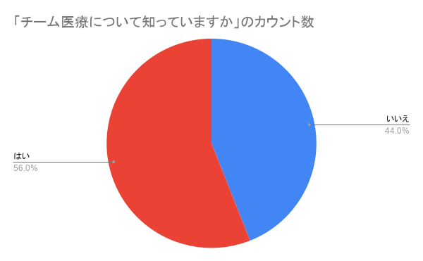
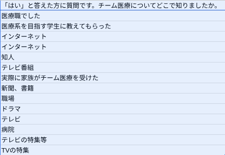

日本におけるチーム医療とはなにか
チーム医療という概念は1960年代のアメリカで生まれた。
そして日本には1970年代にチーム医療の概念が輸入され始めた
チーム名 まもリンク
名前 吉野 史 水元 絢音 潟永 梨央 今口 花怜
チーム医療という概念は1960年代のアメリカで生まれた。
そして日本には1970年代にチーム医療の概念が輸入され始めた
チーム名 まもリンク
名前 吉野 史 水元 絢音 潟永 梨央 今口 花怜


急な連絡にもかかわらず、
インタビューに答えていただいた。
水元かおる様 中西理 様
心から感謝申し上げます